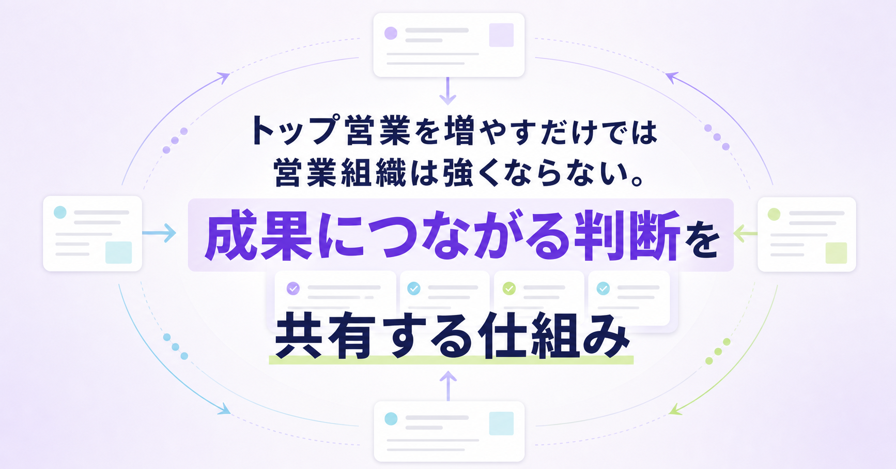
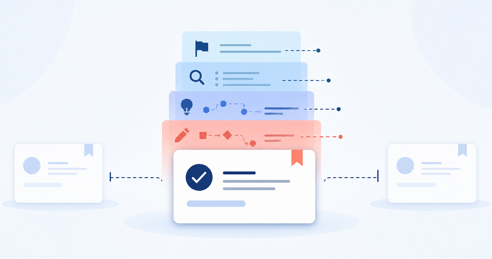
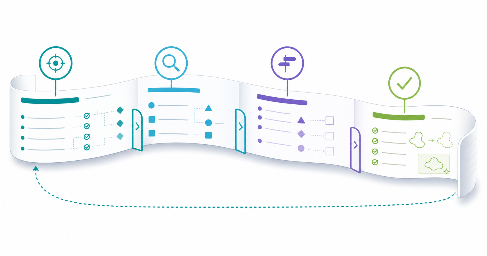
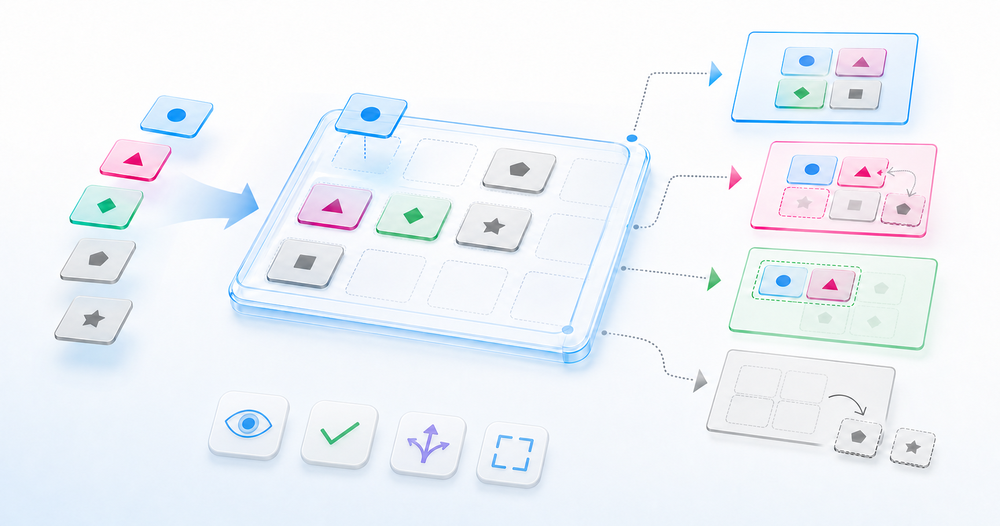
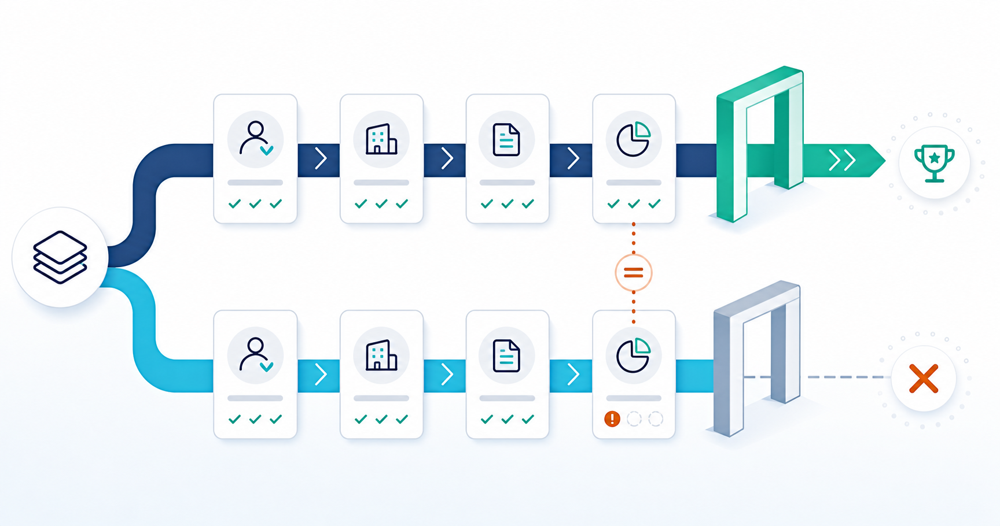
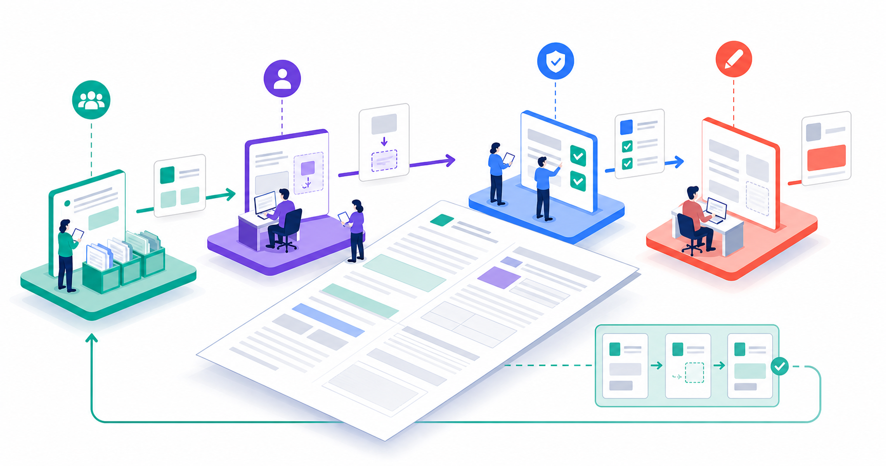
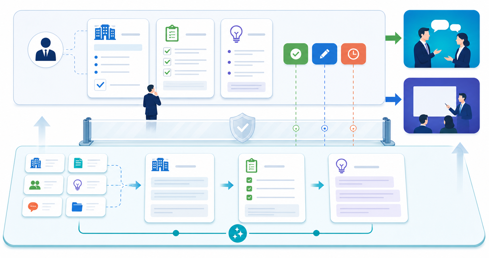
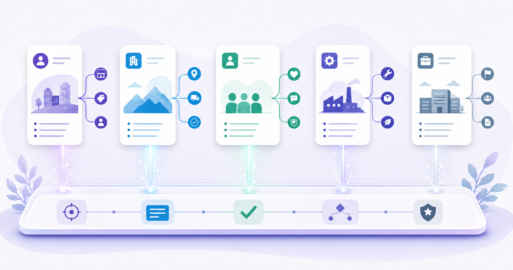

トップ営業を増やすだけでは営業組織は強くならない。成果につながる判断を共有する仕組み
みなさんこんにちは、Valorize AI代表の鈴木創也です。
営業組織の売上を伸ばす方法の一つは、実績のある人材を採用してトップ営業を増やすことです。
しかし、高い成果を出せる人材だけを採用し、必要な人数をそろえることは簡単ではありません。トップ営業一人当たりの売上が大きくても、組織全体では、平均的な成果を上げる多数の営業担当者が売上の多くを支えています。
だからこそ、組織の売上を継続して伸ばすには、トップ営業の採用だけでなく、今いる担当者の成果を高める必要があります。
では、組織の多数を占める担当者の成果を高めるには、どうすればよいのでしょうか。
一つの方法は、自社で成果につながった判断を、ほかの担当者も使える形にすることです。ただし、話し方や提案資料を共有するだけでは足りません。共有するのは、顧客を選んだ理由、商談前に確かめたこと、提案を変えた根拠です。こうした判断をほかの担当者も使える形で記録し、複数案件の結果を基に見直す仕組みが、組織全体の成果を支えます。
成果につながった判断がチームに広がらない理由

セレブリックス営業総合研究所が165名を対象に実施した調査では、「営業プロセスの標準化と再現性の確保」が、単一回答と複数回答のいずれでも最多でした。この結果をすべての企業へ当てはめることはできません。
担当者の成果だけを見ても、その成果に至った判断は分かりません。顧客の変化をどのように見つけたのか。誰に何を聞き、どの仮説を捨てたのか。成功事例の共有会や営業同行を行っても、こうした前提と判断理由が残らなければ、別の顧客を担当するときに応用できません。
すると、案件が変わるたびにマネージャーが進め方を指示することになります。担当者は目の前の案件を進められても、次の案件で自ら同じ判断を下せるとは限りません。人数が増えるほど、育成と案件支援を担うマネージャーの負荷まで増える可能性があります。
ここでいう標準化は、全員の話し方や手順を同じにすることではありません。顧客との対話や提案の最終判断まで型にはめれば、顧客ごとの差に対応しにくくなります。
組織で共通にするのは、判断の根拠と検証の方法です。どの顧客を優先したか、どの事実に基づいて判断したか、商談前に何を確かめたか、結果を受けて何を見直すかを記録します。個人の記憶にとどまっていた判断を記録し、複数の案件で確かめることで、組織の学習材料として使えるようになります。
組織で共通化する四つの項目

では、何を共通にすればよいのでしょうか。すべての営業プロセスを一度に整える必要はありません。
まず、案件記録や営業会議を振り返り、結果や判断のばらつきが目立つ営業活動の場面を一つ選びます。Salesforceの営業プロセスに関する解説も、営業活動の可視化と情報共有を、属人化した活動をチームで進める取り組みの一環として紹介しています。ただし、情報を入力するだけでは、別の担当者が同じ判断をできるようにはなりません。
必要なのは、次の四項目を一つの流れとしてつなぐことです。
優先する顧客と今向き合う理由
最初に決めるのは、限られた準備時間をどの企業のために使うかです。担当者の感覚だけで決めると、担当者が替わったときに、ほかの人は優先順位の根拠を確認できません。
自社が価値を提供しやすい条件に合うか。相手企業で、自社が支援できる課題につながる変化が起きているか。これまでの会話から、ほかの企業より先に対応する必要があるか。
優先すると判断した理由とともに、判断日、次回の見直し時期、根拠となる事実を残します。一度選んだ企業を無期限に重点顧客として扱わないためです。
商談前にそろえる顧客情報
優先すると決めたら、商談と提案の準備に必要な情報を集めます。企業名、業種、規模といった属性だけでは、提案内容を決める材料として不十分です。
事業や組織にどのような変化があるのか。どの課題を想定しているのか。誰が意思決定に関わるのか。次の会話で何を確かめるのか。
全員が同じ結論を持つ必要はありません。組織でそろえるのは、提案内容や次の対応を決める前に確かめる事項です。併せて、確認した事実と未確認の仮説を分けて記録する方法も統一します。担当者は会話で得た事実を基に、仮説を修正します。
優先顧客の選定と、選定後の提案準備は別の段階です。この二つを分けると、なぜ時間を使ったのかと、その時間で何を確かめたのかを混同せずに済みます。
案件を進める判断と申し送り
「次回の打ち合わせがある」「見積書を出した」という記録だけでは、他の人が案件の状況を判断できません。Salesforceの営業日報に関する解説では、営業活動を後から確認し、対応履歴を組織で共有できる形にする意義が説明されています。
申し送りでは、細かな活動をすべて列挙せず、次の情報を残します。
- 顧客の課題仮説
顧客が抱える課題をどのように想定したのか、その根拠とともに残します。 - 確認できた事実
会話や公開情報で確認できた内容を、仮説と分けて記録します。 - 未確認の事項
提案や次の判断の前に、誰に何を確かめる必要があるかを明らかにします。 - 次の行動と理由
次に何をするかと、なぜその行動を選ぶのかを残します。
さらに、案件を次のフェーズへ進める条件を残します。現段階では進めない場合は、その判断理由も記録します。担当者以外のメンバーは、どの条件を満たしたため案件を進めたのか、どの情報が不足していたため進めなかったのかを確認できます。
記録量を増やすことが目的ではありません。担当者、マネージャー、引き継いだ担当者が、同じ材料に基づいて案件を判断できる状態を作ることが目的です。
成功、失注、停滞から基準を見直す
受注事例を成功談として共有すると、印象に残ります。しかし、次の案件で役立つのは、当初の見立てと実際の結果を照合した記録です。
どの事実が仮説を裏づけたのか。どの前提が実態と異なっていたのか。失注した案件や停滞した案件では、優先基準、確認事項、提案の進め方のうち、見直す候補を洗い出します。
一件の結果だけで全社の基準は変えません。顧客規模や商材などの条件が近い案件を比べ、見直し候補に挙げた要素と結果との関係が複数の案件に共通するかを確認します。
Salesforceのセールスイネーブルメントに関する解説は、営業組織が継続的に成果を上げるために、知識やスキル、現場で使える情報、改善の仕組みを整える考え方を紹介しています。知識を蓄積するだけでは、次の案件で参照できません。判断に使える形へ整理して、初めて実務に生かせます。
四つの項目を一つの記録でつなぐ
初回商談前の準備を例にします。
最初に、優先顧客とする理由と判断日を記録します。次に、事業の変化、関係者、課題仮説など、商談前に確かめる事項を決めます。会話後は、確認できた事実、案件を次のフェーズへ進めるかどうかの判断、次の行動とその理由を追記します。受注、失注、停滞のいずれかに至ったら、条件が近い案件と比べ、優先理由、確認事項、進行条件のどこを見直すべきかを決めます。
四項目ごとに資料を分ける必要はありません。一つの案件記録から判断の経緯をたどれれば、優先判断や商談前の準備で残した情報を、その後の判断に使えます。複数案件から得た学びも、優先基準や確認事項の見直しに反映できます。
型を固定せずに検証する方法

判断材料をそろえると、詳しい手順書を作りたくなるかもしれません。ところが、最初から全社共通の手順を決めて固定すると、顧客や商材の違いに対応できず、現場で使われないルールになりがちです。
ここでいう型は、完成済みの手順ではありません。営業活動の特定の場面で使う確認項目と判断基準を暫定的にまとめ、結果を見ながら改めるための仮説です。
対象とする場面は、停滞や判断のばらつきが繰り返し起きている箇所から一つ選びます。初回商談前の準備、重要案件のレビュー、提案前の仮説確認などが候補になります。
選んだ場面で成果を上げた担当者には、使った言い回しではなく、判断の経緯を聞きます。どの情報で優先度を判断したのか。次の提案へ進む条件として、何を確認したのか。どの兆候で見立てを変えたのか。
聞き取った判断の経緯を確認項目として整理し、期間と対象チームを限定して試します。試行前には、導入前と試行後で比べる案件の条件、集計期間、判定方法を決めます。
- 試行対象に占める、商談前に必要な情報がそろった案件の割合
- 試行案件一件当たり、マネージャーが同じ情報の不足を指摘した回数
- 担当者以外のメンバーが、記録から次の行動と理由を説明できた案件の割合
- 定めた確認項目を使えなかった案件に共通する顧客規模、業種、営業活動の場面
この段階で確認できるのは、型が使われたか、判断を引き継げたかです。売上への効果までは分かりません。
定めた方法が現場で使えると確認した後は、顧客規模、商材、案件の流入経路などの条件が近く、結果が確定した案件を比べます。比較するのは、次のフェーズへ移行した案件の割合、停滞した案件の割合、失注理由の分布などです。この比較だけで型の効果を証明することはできないため、変化が見られた場合も、型以外の施策や市場環境の違いを確認します。必要な情報がそろっても、同じ記録を読んだ複数の担当者で、案件を進めるかどうかの判断が分かれるなら、確認項目や判断基準を修正します。特定の顧客層や商材で使えないなら、適用範囲を限定します。入力の負担だけが増え、判断にも検証にも使われない項目は廃止します。
守るべきなのは型そのものではありません。判断の根拠を共有し、結果から学べる状態です。
営業会議で比べるもの

型を作っても、会議が個別案件の報告だけで終われば、型を見直す根拠は得られません。数字と案件一覧の確認は必要ですが、報告量を増やしても、組織が使える判断材料は増えないからです。
会議では、結果が確定した案件の中から、顧客の規模、商材、営業活動の場面などの条件が近い組み合わせを選びます。そのうち、一方が次のフェーズへ進み、もう一方が停滞した組み合わせを比べます。それぞれについて、優先した理由、事前に立てた仮説、顧客から得た事実を確認します。その上で、何を満たしたため次のフェーズへ進めたのか、何が足りなかったため停滞したのかを比べます。
一件の違いは、共通ルールを変える根拠としては足りません。試行前に、何件の案件で同じ傾向が現れたら変更を検討するか、またはどの期間まで観察するかを決めます。定めた条件を満たしたときに、変更案を作ります。判断に足る案件数が集まっていなければ、基準を変えずに観察を続けます。ただし、顧客との信頼や法令順守に関わる重大な問題が見つかった場合は、一件だけでも問題のある確認項目や運用を止め、影響範囲を調べます。
ダイドードリンコのSalesforce公式事例では、営業活動に関するデータを一元管理し、計画、実行、共有を一つの流れにする過程で、役割の異なる三階層のメンバーが連携したと紹介されています。一社が特定製品を導入した事例なので、同じ方法が他社でも有効だとは限りません。それでも、現場の担当者、管理職、推進担当者が別々の役割を担った事例として、更新責任を考える参考になります。
会議の終了時に残すのは、感想ではありません。誰が変更案をまとめ、どの範囲で試し、何を見て継続を判断するかです。
標準化を更新する役割分担

ここで別の問題が生まれます。誰が型を変えるのでしょうか。
型の見直しを現場の担当者だけに任せれば、案件対応が優先され、見直しは後回しになりやすくなります。営業企画だけが型を変えれば、実際の営業活動から離れたルールになりかねません。
共通化する範囲も決めます。判断に使う準備情報、案件レビューで確かめる事項、振り返りで残す内容は共通化できます。顧客との対話、提案の最終判断、関係者との合意形成は、担当者が顧客ごとの状況を踏まえて担います。
役割分担の一例は次のとおりです。
- 見直しに必要な情報を残す
現場担当者が、確認項目や判断基準を使えなかった顧客の条件と、判断に足りなかった情報を記録します。 - 変更案を整理する
チームリーダーが複数の案件を比較し、どの項目を追加し、修正し、廃止するかを案としてまとめます。 - 試行範囲を承認する
営業責任者が、対象チーム、対象とする顧客の条件、試行期間、判定方法を承認します。 - 現場で使う形式へ反映する
営業企画が、確認項目や案件レビューで使う質問を更新し、変更理由と適用日を周知します。 - 継続か終了かを決める
営業責任者が試行結果を確認し、組織全体へ展開するか、修正して試行を続けるか、対象を限定するか、終了するかを判断します。
判断理由は、次の変更案を作る際に参照できるように残します。
小規模な組織では、一人が複数の役割を兼ねることもあります。それでも、変更の提案、試行の承認、書式への反映、結果の検証という責任を区別すれば、変更案の放置や、承認されていない範囲へのルール適用を防ぎやすくなります。
判断の経緯を共有するだけでなく、共有方法を見直す責任まで決めると、改善を続けるための役割が一通りそろいます。
AIに任せる営業準備の範囲

判断基準を決めても、担当者が毎回ゼロから情報を集めていては、型を使い続けるのが難しくなります。準備に必要な情報の収集や下書きには、AIを使えます。
人が担うのは、対象とする顧客の条件を決めること、優先順位を変えること、提案内容を最終判断すること、顧客と対話することです。人が決めた対象条件と確認項目を基に、企業リストを作成し、個社情報を調査し、提案仮説を下書きし、必要な情報を整理する作業にはAIを使えます。
作業時間を短縮するだけでは、組織の再現性にはつながりません。組織で決めた項目に沿って情報を共通の書式にそろえると、担当者とマネージャーが同じ基準で顧客ごとの違いを確認できます。
経済産業省のAI事業者ガイドライン（第1.2版）も、AI出力の精度やリスクの程度を理解し、リスク要因を確認した上で利用することの必要性を示しています。重要顧客向けの提案や送信文面、機密性の高い商談情報など、顧客からの信頼や営業の結果に影響し得る情報ほど、人が入念に確認する必要があります。
AIで集めた情報は、人が正確さと提案に使う妥当性を確かめます。準備に使えなかった情報の種類と、そのときの顧客の条件を記録し、優先基準や確認項目の見直しに反映します。この流れがあれば、AIは個人の代わりに判断する存在ではなく、組織で決めた方法に沿った準備を続けやすくする道具になります。
人が毎回ゼロから準備する時間を減らせば、優先顧客への提案方針の検討、意思決定に関わる相手の見極め、失注理由の分析、商談後のフォローへ時間を配分できます。人の時間を判断と対話へ振り向けられる状態が、営業組織の再現性を支えます。
まとめ：今いる担当者の成果を高める仕組み

トップ営業の採用は、売上を伸ばすための一つの選択肢です。しかし、高い成果を出せる人材だけで必要な人数をそろえることは簡単ではありません。組織の売上の多くを支えるのは、平均的な成果を上げる多数の営業担当者です。だからこそ、今いる担当者の成果を高める仕組みが必要です。
顧客を優先する理由、商談前の確認事項、会話後の事実、案件を進める条件を一つの記録でつなぎます。条件が近い複数案件の結果を比べ、優先基準と確認事項を見直します。現場担当者が見直しに必要な情報を残し、リーダーが変更案を整理し、責任者が試行と展開を判断します。
こうして、自社で成果につながった判断を、今いる担当者も使える判断基準へ変えます。
Valorize AIが提供するSales Triggerは、人が決めたセグメントを起点に、企業リストの作成、個社情報の調査、企業ごとの提案仮説やアプローチ文面の準備を行う半自動化AIエージェントです。送信前に人が内容を確認し、営業担当者が顧客の理解、提案内容の判断、対話へ集中できるようにします。